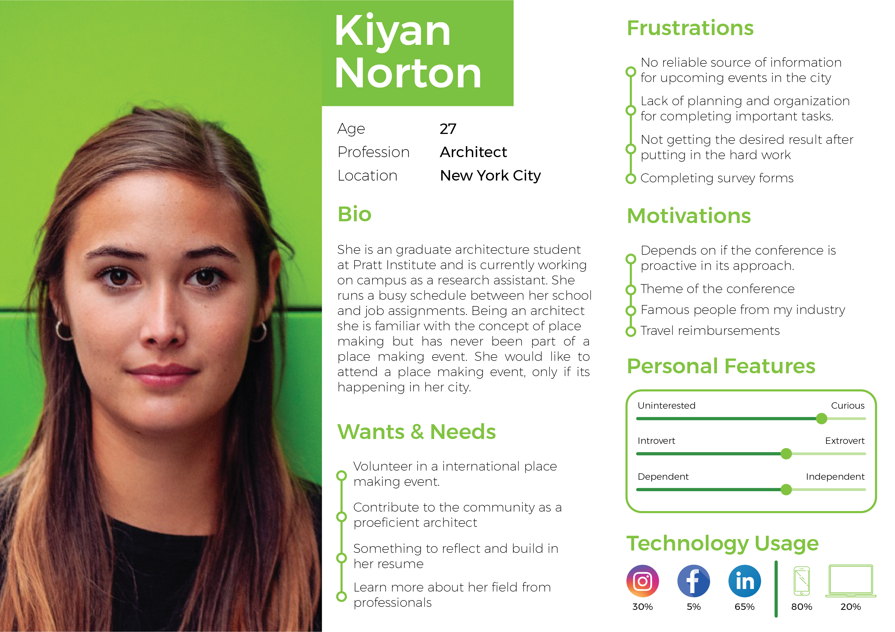

A navigation labyrinth. The "back" button as the only escape.
Placemaking Week is a global conference run by Project for Public Spaces — a weeklong gathering of placemakers emphasising hands-on learning and community legacy. Despite the richness of the event, their website was actively discouraging attendance: a dynamic navigation menu that changed unpredictably, dense walls of text, and a landing page that gave users no reason to stay.
This 14-week project, conducted with a team of five and guided by Prof. Nancy Smith, set out to restructure the website's information architecture and redesign three core pages for both desktop and mobile — with particular focus on fixing the navigation.

Placemaking Week · Redesign overview · Desktop and mobile views
Four methods. One clear picture of what was broken.
The research phase combined quantitative and qualitative approaches to understand both what users struggled with and why. The target user group was students from diverse academic backgrounds — architecture, design, business, and computer science — who represented only 5% of current attendees but were a primary growth audience for the conference.

Observation study · Notes · Think-aloud session with prospective user
The card sort was deliberately broad — 38 cards drawn from user input, existing site terminology, and comparable conference websites. The result was 61 different category groupings across 11 participants, which wasn't a failure but a signal: the existing labels were generating genuine confusion that needed to be addressed before any tree testing could produce reliable results.

Card sorting · Similarity matrix · 61 unique categories surfaced labelling confusion
Three problems. All pointing to the same root cause.
The research converged on a consistent story: the website's content was potentially interesting, but users couldn't navigate to it — and what they saw first wasn't compelling enough to make them try harder.
"[This is] too much text, I am not gonna read through all of this."
— Observation study participantTree testing followed the card sort, using a revised labelling system informed by the 61-category data. 10 participants completed 7 structured tasks — 5 in person, 5 remote. The tree testing results confirmed which structural changes were necessary before moving to wireframing.

Tree testing · Final tested tree · 7 tasks across 10 participants
From paper prototype to high-fidelity. Navigation first, always.
The design process started with paper prototypes — initially planned for in-person testing, moved to digital and remote due to COVID. Each team member was responsible for sketching key sections; my focus was the header and footer, with two header iterations and three footer iterations tested with 5 participants.
Paper prototype testing returned two clear insights: users expected clicking a speaker's photo to load more detail, and the navigation order felt wrong — "About" was expected first. Both were addressed before low-fidelity wireframing began.

User persona · Architecture student · Primary target user group for redesign

High-fidelity prototype · Three redesigned pages · Desktop and mobile
Navigation fixed. Client presentation delivered.
The final high-fidelity designs addressed all three core problems identified in research: a landing page that communicates the conference's value on first impression, a consistent navigation that removes the labyrinth, and a content hierarchy that makes information scannable rather than exhausting.
Three pages were delivered for both desktop and mobile: the landing page, the programme/schedule page, and the registration flow. The client received the designs at the end of the 14-week project alongside a research report documenting all study findings.
The project reinforced a principle I've applied since: don't wireframe until the information architecture is settled. Every hour spent on card sorting and tree testing saved ten hours of rework in prototyping.